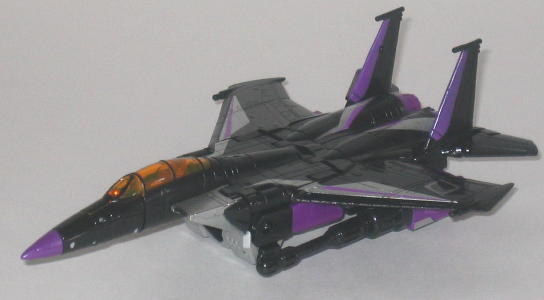
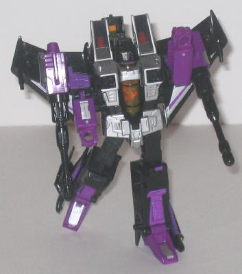
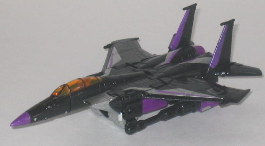
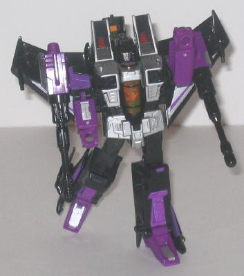
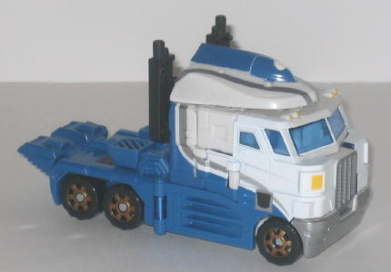
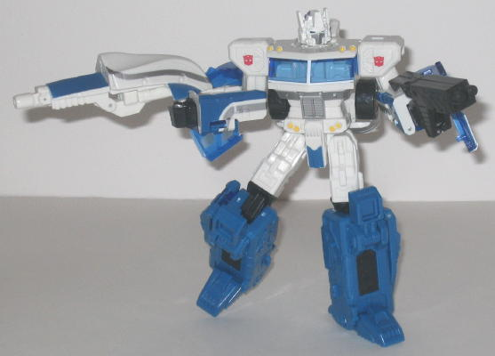

 
Allegiance : Decepticon
Size : Deluxe
Difficulty of Transformation : Medium
Color Scheme : Black, silver, violet, and some dark red and transparent orange
Rating : 9.6
Set Price
: $20 (U.S.)
 Skywarp
Skywarp


Allegiance
: Decepticon
Size
: Deluxe
Difficulty of Transformation
: Medium
Color Scheme
: Black, silver, violet,
and some dark red and transparent orange
Rating
: 9.6
(NOTE: Because this is a repaint, this is not a full-blown review. This mainly covers any changes made to the mold and the color scheme, and merely compares it to Classics Starscream. For a review on the mold itself, read the review of Classics Starscream here .)
Skywarp is back, and
this time in his most G1-ish form since, well... his
G1
toy
. Heck, actually it's MORE G1 than his G1 toy, since it looks more
like he did in the G1 cartoon. His delicious black, silver, and purple
color scheme is back again, and this time even better than it's been before.
Instead of a light purple, it's a more moderate color of purple this time
around, which fits in with the black and silver even better, in my opinion.
The silver looks great on his robot chest and intakes, and the nifty silver-and-purple
stripes on his wings really add to the sleekness of his jet mode. Another
nice touch is that the transparent orange-colored cockpit form the G1 toy
is kept for this toy as well. Oh, and his head is actually a BLACK color
this time with a painted silver face, instead of Classics Starscream's
bland gray face with painted black "helmet". It looks MUCH better.
No mold changes have
been made to Classics Skywarp.
Classics Skywarp is
as good as this already awesome mold is going to get. The color is spot-on
perfect, with a lot of paint apps that complement each other really well.
Plus, it's always good to have another seeker!
 Ultra
Magnus
Ultra
Magnus


Allegiance
: Autobot
Size
: Voyager
Difficulty of Transformation
: Medium
Color Scheme
:
White, dull blue, and some transparent light blue, silver, yellow, black,
and dull metallic goldish bronze
Rating
: 9.5
(NOTE: Because this is a repaint, this is not a full-blown review. This mainly covers any changes made to the mold and the color scheme, and merely compares it to Classics Voyager Optimus Prime. For a review on the mold itself, read the review of Classics Voyager Optimus Prime here .)
A mold as good as Classics
Voyager Prime needed a repaint, and it's here in the form of Ultra Magnus,
sans his
G1 armor
. The colors are classic Magnus,
with white and blue being the predominant colors with a bit of black to
help darken things up a little. They worked well before, and they work
well now. There's also a fair amount of silver, which looks especially
good on the stripes on the front and sides of the vehicle mode and the
robot chest. The bronze detailing on the tire interiors looks really cool
as well, and probably contrast the best out of all the paint apps. That
said, Ultra Magnus does have a few flaws as far as his paint apps are concerned.
For one, the bits of yellow used for the headlights are so light they really
don't contrast much with the surrounding white at all, and are rather hard
to see because of this, especially on the robot waist. There are also a
few areas on Ultra Magnus that could really use some more paint apps, such
as the robot legs and shoulders.
No mold changes have
been made to Classics Ultra Magnus.
Classics Magnus has
some great color choices and is a fine repaint of Classics Optimus Prime.
However, overall I'd recommend Prime a little over Magnus just because
he has a bit more color variety and his paint apps are spread more evenly
over the figure.
There's not really any reason NOT to recommend the "Battle for Autobot City" 2-pack. You get two of the best Classics molds, in great paint schemes, and for $10 cheaper than if they had been sold seperately to boot. Given that at the time of this writing they're on clearance, so they're even cheaper, if you're even a casual fan of G1 this is a must-buy set.
Review by Beastbot